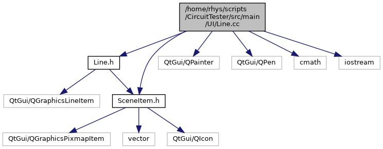

#include "Line.h"#include "SceneItem.h"#include <QPainter>#include <QPen>#include <cmath>#include <iostream>
Include dependency graph for Line.cc:

Go to the source code of this file.
Macros | |
| #define | USE_CURVE 0 |
Functions | |
| double | distance (QPointF a, QPointF b) |
| bool | higher (QPointF a, QPointF b) |